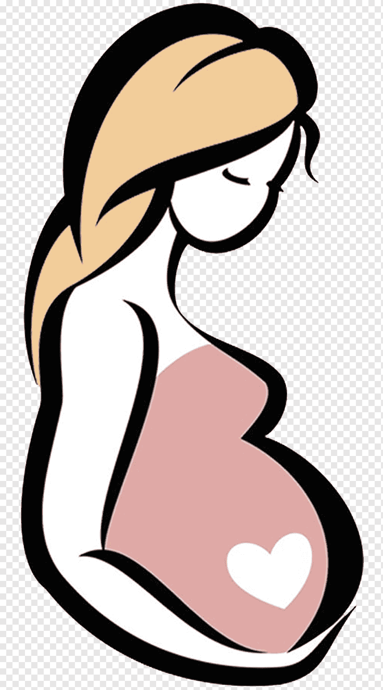

Pregant Ladies Care

-
Do take a multivitamin
Eating a balanced diet that’s rich in vitamins and minerals is the best way to provide your body with all of the healthy nutrients it needs to support a growing baby. A healthy diet alone, however, may not be
enough for pregnancy
-
Do get lots of sleep
Changing hormone levels, anticipation, and anxiety can make sleep elusive during your 9 months of pregnancy. Pregnancy is demanding, especially in the final trimester, and you’ll need your sleep. Take a quick
snooze if you feel tired and schedule naps whenever you can. Set bedtimes and stick to them. Aim for 7-9 hours of shut-eye each night. Fatigue is a sign that your body needs more rest, so give yourself all the sleep you can
-
Do work out
Gone are the days of pregnant women avoiding lifting a finger during their pregnancies: We now know that exercise is good for mama and baby. In fact, regular exercise may help you combat many of the issues that arise during
pregnancy, including: insomnia muscle pain excessive weight gain mood problems If you regularly exercised before you became pregnant, keep it up. Talk with your doctor about any adjustments you should make to your routine, especially as you
move into your second and third trimesters. If you didn’t exercise regularly before you found out you were expecting, ask your doctor about incorporating a fitness routine into your day. They can guide you into a program that’s safe and comfortable
for you and your growing baby.
-
Do eat seafood
Seafood is loaded with vitamins and minerals, such as heart-healthy omega-3 fatty acids, zinc, and iron. These are all important for both mom and baby. But undercooked or raw seafood can cause some problems. Seafood
may carry harmful bacteria and viruses, which are eliminated when thoroughly cooked. Also, pregnant women should avoid raw fish and fish that may contain high levels of mercury. Examples of fish containing high levels of mercury include: shark
swordfish tilefish king mackerel Eat a variety of seafood so you don’t have a concentration of minerals from one type of fish. Eat no more than 12 ounces of fish per week.
-
Do practice yoga
You should avoid Bikram or hot yoga, but other yoga modalities are fine when you’re expecting. Seek out prenatal or gentle yoga classes that are designed for mothers-to-be. Instructors in these classes will know which
poses are best and which you should avoid. If you weren’t doing yoga before you became pregnant, talk with your doctor before signing up for a class. While it’s possible you can start, it’s best to go over the risks and concerns with your
doctor. Shop for yoga mats now.
-
Do gain weight smartly
The “eat for two” advice to expecting mothers isn’t a license to eat whatever you’d like. Instead, women need to be strategic about what they eat and how much. Gaining a lot of weight during pregnancy may do
more harm to your baby than good. During your first trimester, you only need about 100 extra calories a day to support your growing fetus. By your third trimester, that additional calorie number is closer to 300 to 500 per day.